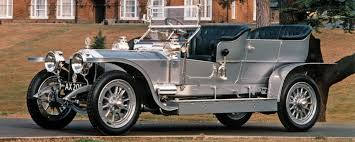

Rolls-Royce est une marque de voiture anglaise.
Rolls-Royce (RR) est le nom porté par plusieurs sociétés anglaises, toutes dérivées de celle de construction d'automobiles de luxe et de moteurs d'avions, fondée par Frederick Henry Royce et Charles Stewart Rolls en 1906 : Rolls-Royce Limited : l'entreprise d'origine, fondée en 1906 à la suite du partenariat des fondateurs datant de 1904 ; Rolls-Royce plc : la division aéronautique issue de la scission de Rolls-Royce Limited en 1973. De loin la plus importante en termes économiques, produit des turbines surtout pour l'aviation ainsi qu'une vaste gamme de produits sophistiqués pour les secteurs civil et militaire ; Rolls-Royce Motors : la division automobile issue de la scission de Rolls-Royce Limited en 1972 Rolls-Royce Motor Cars : fabricant d'automobiles de luxe, propriété du constructeur allemand BMW depuis la cession de Rolls-Royce Motors en 1998. La société a lancé en janvier 2003 son premier modèle sous l'égide de BMW : la Rolls-Royce Phantom.
RRGrâce à la Silver Ghost lancée en 1907, la marque Rolls-Royce devient une référence dans le domaine des voitures de luxe. Ce modèle, habillé d'une superbe carrosserie en aluminium, est entré dans l'histoire de l'automobile en parcourant 15.000 milles entre le 1er juillet et le 8 août 1907 sans subir aucune panne mécanique. Aux Silver Ghost ont succédé les prestigieuses Phantom, puis les modèles Silver Dawn, Silver Cloud, Silver Spirit et Silver Shadow. A noter : la célèbre figure de proue qui identifie la marque est apparue en 1911 sur les Silver Ghost. Cette figurine appelée "The Spirit of Ecstasy" ("l’esprit de l’extase") a été sculptée par Charles Sykes, à la demande de Charles Rolls. Elle s’inspire d’une statue exposée au Louvre "la Victoire de Samothrace" et représente une jeune femme les bras déployés et la robe flottant au vent. En un siècle, la firme britannique a fabriqué quelque 100.000 voitures, en restant fidèle au principe édicté par Henry Royce : "Chercher la perfection en tout."
modèle mythique 